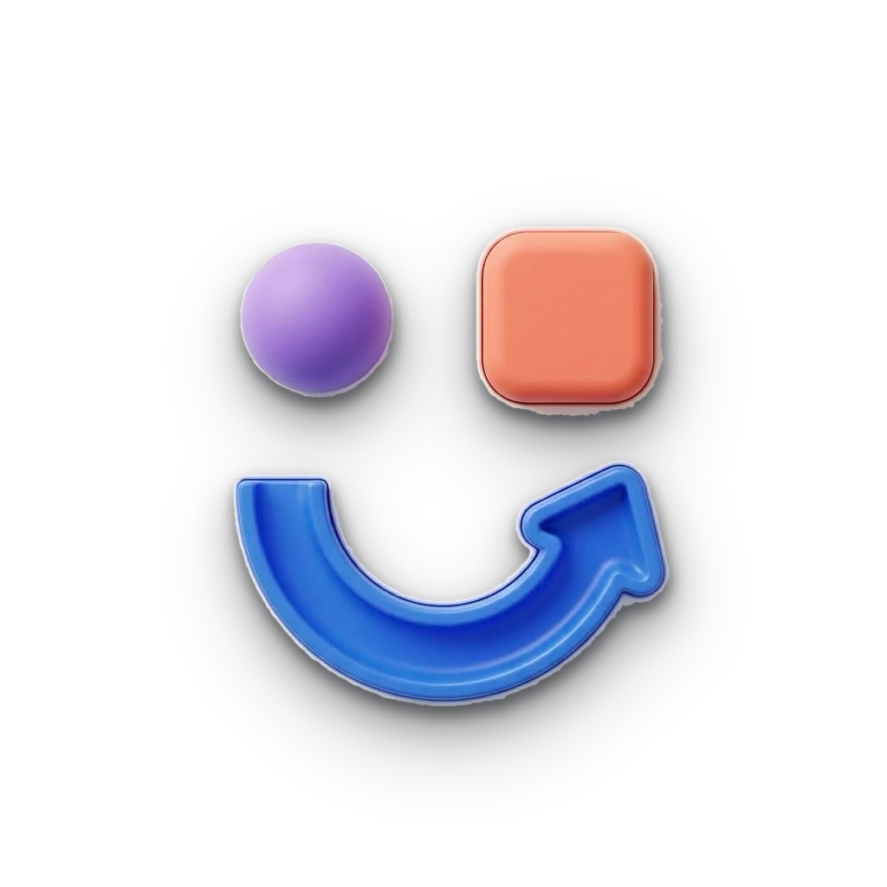

Tactile Casual Puzzles • Puzzles & Desafios
Esta Política de Privacidade descreve como o aplicativo Nodyx: Puzzles & Desafios, desenvolvido de forma independente por Emanuel Castro, coleta, utiliza e protege suas informações ao utilizar o jogo em dispositivos móveis (iOS e Android).
O Nodyx foi desenvolvido com privacidade em primeiro plano (Privacy by Design). Nós não exigimos criação de conta, login social obrigatório, nem coletamos dados pessoais sensíveis como nome completo, endereço de e-mail, telefone ou geolocalização física.
Nós não vendemos, alugamos, repassamos ou comercializamos quaisquer informações dos nossos usuários. O compartilhamento técnico ocorre de forma transparente estritamente com as plataformas consolidadas do ecossistema mobile:
O Nodyx é um jogo casual para todas as idades e não coleta deliberadamente dados pessoais identificáveis de crianças ou menores de idade. Se você for pai/mãe ou responsável legal e identificar que qualquer informação pessoal foi coletada inadvertidamente, entre em contato imediatamente para remoção célere.
Como os dados de jogo são mantidos no armazenamento local do seu próprio smartphone ou tablet, você tem total autonomia para apagar qualquer dado a qualquer momento: basta limpar o armazenamento/cache do app nas configurações do dispositivo ou simplesmente desinstalar o jogo.
Caso tenha dúvidas, sugestões ou solicitações relativas a esta Política de Privacidade ou ao funcionamento do Nodyx, entre em contato diretamente com o desenvolvedor:
Desenvolvedor: Emanuel Castro
E-mail de Suporte: emanuelcastro.dev@gmail.com
Repositório do Projeto: github.com/emanuelcastro/nodyx
This Privacy Policy describes how the mobile application Nodyx: Tactile Casual Puzzles, developed independently by Emanuel Castro, collects, uses, and protects your information across iOS and Android devices.
Nodyx was built following the principle of Privacy by Design. We do not require account creation, mandatory social logins, nor do we collect sensitive personal data such as your legal name, physical address, email address, or GPS geolocation.
We do not sell, rent, trade, or monetize your personal data. Data processing occurs strictly through standardized mobile platform providers:
Nodyx is a casual logic puzzle game suitable for all audiences and does not knowingly collect personal identifiable information from children under the applicable age of consent. If you believe any personal data has been inadvertently collected, please contact us immediately for swift resolution.
Because all gameplay progress and settings reside directly on your local device, you retain absolute control over your data. You may permanently delete all stored data at any time by clearing the application storage/cache in your device settings or by uninstalling the game.
If you have any questions, feedback, or inquiries regarding this Privacy Policy or the application, please feel free to reach out:
Developer: Emanuel Castro
Support Email: emanuelcastro.dev@gmail.com
Project Repository: github.com/emanuelcastro/nodyx